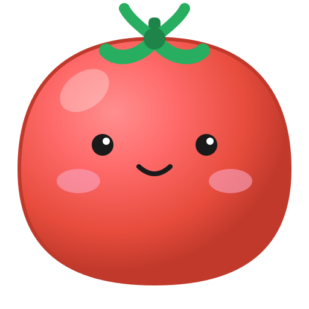

A cute, ultra-lightweight focus companion for your Mac.
Because Pomodoro Buddy is an independent project and isn't signed with a paid Apple Developer ID, macOS may say the Tauri version is "damaged" or "cannot be opened."
To fix this, simply drag the app to your Applications folder, then run this command in your Terminal:
Alternatively, download the "Standard" version above which works straight out of the box.
A beautifully designed tomato buddy to keep you company.
Floats over your windows so you never lose track of time.
Native ARM64 support for maximum efficiency.